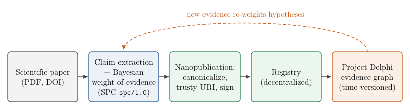

Accelerating Frontier Science with a Living, Probabilistic Evidence Graph
- Created
- Modified
Abstract
The rate-limiting step in frontier science is increasingly not generating data but synthesizing it: reading a flood of papers, weighing how strongly the evidence supports each hypothesis, and deciding what to test next. We describe Project Delphi, a system and methodology that accelerates this loop by maintaining a living, probabilistic evidence graph of a field. Nodes are hypotheses and the claims that sources state; edges are evidential and citation relations; and every node carries explicit, agent-attributed assessments of three kinds: a Bayesian weight of evidence in decibans, derived from reported statistics via Vovk–Sellke calibration; rubric scores assigned by a panel of language models, among them how far a claim can be tested with data that already exist; and the outcomes of tests that were actually run. The graph is versioned through time so hypotheses can be watched as they strengthen or weaken—turning “where is this field heading, and what should we measure next?” into a query rather than a literature review. Under the hood, each claim, assessment, dataset, and test result is stored as a machine-readable, independently verifiable unit (a nanopublication) that uses the Project Delphi ontology; this substrate is what makes confidence computable, auditable, and reusable, but it is a means, not the end. As of November 25, 2026, the deployed graph spans 60,410 papers, 559,764 extracted claims, and 17,075 hypotheses across 1,052 domains, and 6,182 signed nanopublications are live on the public nanopublication network, among them 2,044 claims and 3,752 model assessments. We ground the system in two case studies. In bioelectricity, claims from the Levin-lab regeneration and pattern-formation literature are weighed, and calcium-imaging measurements of injured Xenopus embryo pairs from an active wet lab are quantified so that they can enter the graph as new evidence, while the graph’s confidence gaps nominate the next bench experiment. In the second, a claim from D’Arcy Thompson’s On Growth and Form is taken through the whole loop on the public network: extracted with its source quote, scored for testability by two models, tested on public images, and revised twice after outside critique. We discuss how this accelerates discovery (front-and-center uncertainty, machine-actionable synthesis, experiment prioritization), its limitations (model-assisted assessment, independence assumptions, calibration as a bound), and the provenance practices required when large language models assist in evidence appraisal.
Keywords
- accelerating science
- living evidence graph
- hypothesis prioritization
- Bayesian weight of evidence
- evidence synthesis
- automated discovery
- bioelectricity
- nanopublications
Introduction
Frontier science advances through a loop: read what is known, weigh how strongly the evidence supports each competing hypothesis, design the experiment that would move belief the most, run it, and fold the result back in. As the literature grows—millions of papers per year, and still accelerating [2]—the rate-limiting step is increasingly not generating data but synthesizing it. The bottleneck is the human loop: no one can read, weigh, and reconcile a fast-moving field in their head, so synthesis lags discovery and experiments are chosen on partial pictures. The underlying obstacle is representational. The unit of scientific communication is still the human-readable article, and the claims it makes and the strength of the evidence behind them are rarely exposed in a form that a machine—or a busy human—can query, aggregate, or track over time. This contributes to well-documented problems: difficulty synthesizing fast-moving fields, fragility of conclusions that are asserted rather than weighed, and a reproducibility landscape in which the credibility of a finding is hard to read off the literature [7]. If we want to accelerate science, the loop itself—synthesis and the choice of the next experiment—is what must be made faster.
Three threads of prior work point toward a remedy but have not been combined into a single, web-native, probabilistic substrate. (1) Nanopublications [5] make an individual assertion a first-class, citable object on the web, bundled with its provenance. (2) Trusty URIs [10] and decentralized nanopublication registries [11] make such objects immutable, verifiable, and permanent, satisfying the FAIR principles [17]. (3) A long statistical tradition—Good’s weight of evidence [3, 4], Bayes factors [9], and the calibration of p-values into Bayes-factor bounds [15]—provides a principled scalar for “how strong is the evidence?”. Scholarly knowledge graphs such as the Open Research Knowledge Graph [8] structure claims, but typically without an explicit, propagating measure of evidential strength, and “living” evidence efforts [6] track strength but not as a web-native graph.
Contribution. We present Project Delphi, a system that fuses these threads:
- A claim model, the Project Delphi ontology, that keeps what a source states (a claim) apart from how credible it is (its assessments), and attaches to every claim its context, its source passage, its evidence items, and assessments with explicit agent provenance (Section 4).
- Three kinds of assessment: a Bayesian calibration that converts reported statistics into per-result Bayes factors via the Vovk–Sellke bound and combines them into a single weight of evidence in decibans; rubric scores assigned by panels of language models; and executed tests against data (Section 5).
- A verifiable storage substrate that encodes each claim, assessment, dataset, and test result as a nanopublication—canonicalized, content-addressed with a trusty URI, signed, and replicable—so that confidence is computable, auditable, and reusable rather than locked in prose (Section 6), together with a dated, reproducible count of what is published (Section 7).
- A living evidence graph that aggregates these claims and assessments into a time-versioned map of hypotheses, with confidence as an aggregate weight of evidence, and that surfaces its own gaps as an experiment-prioritization signal (Section 8).
The emphasis throughout is on accelerating the discovery loop: the nanopublication substrate is the enabling machinery, while the contribution is a synthesis-and-prioritization layer that a lab can act on. We ground the system in two case studies: bioelectricity, where the loop reaches into an active wet lab (Section 9), and a claim from On Growth and Form that went through the whole loop on the public network (Section 10). We then discuss limitations and the epistemics of model-assisted appraisal (Section 11).
System Overview
Figure 1 shows the end-to-end pipeline. A source paper is read (by a human or a model-assisted extractor) into one or more claims; each claim is assessed, by calibrating its reported statistics into a Bayesian weight of evidence, by scoring it on a rubric, or by running a test against data (Section 5); claims and assessments are serialized as nanopublications, canonicalized, content-addressed, and signed; the signed nanopublications are published to a registry and ingested into the Project Delphi graph, where they become (or update) hypothesis nodes whose confidence reflects the aggregate weight of evidence and whose history is retained.

The system in deployment
Project Delphi is not only a design; it runs at corpus scale at scienceoracle.com (earlier at probknow.com). As of November 25, 2026, its public graph holds 60,410 papers (source literature spanning 1781–2026), from which a multi-model extraction pipeline pulled 559,764 discrete claims, clustered into 17,075 hypotheses across 1,052 domains (internally called “places”). On June 19, 2026, when the first version of this paper was written, the same counts stood at 4,886 papers, 48,561 claims, 1,299 hypotheses, and 88 domains. The deployed pipeline specializes the abstract flow of Figure 1 into five stages: (1) ingest papers from OpenAlex, PubMed, and Semantic Scholar; (2) extract discrete claims and an evidence weight with a multi-LLM pipeline; (3) synthesize related claims into named, hierarchical hypotheses; (4) forecast a dated economic prediction (market size and years-to-impact) for each; and (5) score a slice with a panel of language models (Section 5.2). Coverage is uneven: 444 of the 1,052 domains have hypotheses so far, and the median domain holds 60 papers and 544 claims. Table 1 summarizes the graph by domain family; most of the growth since June is in domains on mathematics and its applications and on electrochemistry. Part of the project’s material is published as signed nanopublications—the verifiable substrate of Section 6, counted in Section 7—while the graph in the application holds lighter-weight nodes.
| Domain family | Domains | Papers | Hyps. | Claims |
|---|---|---|---|---|
Mathematics and its applications (math-…) | 609 | 30,328 | 3,952 | 275,494 |
Electrochemistry (electrochemical-…) | 128 | 8,809 | 4,225 | 84,209 |
Gallium nitride devices (gan-…) | 32 | 2,523 | 1,353 | 24,348 |
Microelectromechanical systems (mems-…) | 22 | 1,551 | 668 | 14,752 |
silicon-… | 16 | 1,092 | 477 | 10,560 |
| All other domains | 245 | 16,107 | 6,400 | 150,401 |
| Total | 1,052 | 60,410 | 17,075 | 559,764 |
An economic prioritization layer. Beyond evidential strength, each hypothesis can carry dated economic predictions that move the question from “what is true?” toward “what is worth testing next?”. Across the corpus there are 30,527 such predictions with a sized market (7,338 in June 2026), at an average of 6.4 years to achievement. Their market sizes add up to roughly $240 trillion ($45.8 trillion in June); this sum counts overlapping markets many times over and is not an estimate of total addressable value. The predictions give the experiment-prioritization signal of Section 8 a second axis—expected economic impact—orthogonal to the evidence weight, so a lab can rank candidate experiments by both how much belief and how much value a result would move. (These forecasts are model-generated and should be read as calibrated opinion, not investment advice.)
The Claim Model
The atomic unit is a claim: a discrete proposition that a source states. The graph does not assert a claim as true; its credibility is carried by the assessments attached to it. Claims, assessments, and everything around them are described with the Project Delphi ontology (https://w3id.org/delphi/ontology/, version 2.0), which reuses PROV-O, Dublin Core Terms, SKOS, DCAT, and the SPAR ontologies, among them the Citation Typing Ontology [14], wherever an existing term means the same thing, and mints a term only where none does. The ontology takes the place of the spc/1.0 schema (the “structured probabilistic claim”) and the example identifiers that the first version of this paper used; it maps the terms of the earlier vocabularies to the current ones, so that nanopublications published before the change keep their meaning. Its main classes are:
- Hypothesis (
delphi:Hypothesis) — a proposition that the graph represents without asserting it. Hypotheses form a hierarchy (skos:broader,skos:narrower), which is how a cluster of claims is tied to the proposition they bear on. - Claim (
delphi:Claim) — a hypothesis that a source actually states. It carries a precise statement (dcterms:description), a short label, its kind (dcterms:type, for example an empirical generalization, a mechanism, a prediction, or a mathematical law), and its context (delphi:context): the place in the source and the system, organism, or conditions that scope it. It is tied to its source withprov:wasDerivedFrom, down to the quoted passage. - Testable hypothesis (
delphi:TestableHypothesis) — a hypothesis stated together with a proposed test (delphi:proposedTest), a prior probability, and a resolvability score. - Evidence item (
delphi:EvidenceItem) — a single piece of evidence for or against a claim (delphi:hasEvidence): a reported result with its statistical test and p-value, a candidate dataset, or the outcome of an executed test. - Assessment (
delphi:Assessment) — an evaluation of a hypothesis by an agent (delphi:hasAssessment), kept as a resource of its own because it relates a subject, an evaluator, a time, and a result. Adelphi:BayesianAssessmentcarries a Bayes factor, a weight of evidence in decibans, and the calibration method; adelphi:LLMClaimAssessmentcarries a probability or a rubric score in [0, 1], a verdict, the assessor’s confidence, and the considerations that speak against the judgement. Every assessment is attributed (prov:wasAttributedTo) to a software agent, which names the language model it runs (delphi:usesModel). - Dataset (
dcat:Dataset) — a dataset that a test used, published once as a resource of its own with its license, source, and checksum, and referenced from the evidence item withprov:used. - Domain and concept (
delphi:Domain,delphi:Concept) — the field a claim belongs to, and the reusable terms that claims refer to. A rubric and each of its dimensions are concepts.
This separation lets a downstream consumer take the claim, inspect its context, follow it to the sentence it came from, and read every judgement of its strength together with who made it, all without parsing prose. The ontology keeps apart two weights that are easy to confuse: delphi:weightOfEvidenceDeciban, the Bayesian quantity of Section 5.1, and delphi:weightOfEvidence, an aggregate score in [0, 1] assigned by a model panel. The second is the scale of the evidence weight that the application reports, 0.83 on average over the deployed graph.
Assessing Claims
A claim’s credibility is carried by its assessments. Project Delphi uses three kinds, which answer different questions: how strong are the statistics that the source reports (Section 5.1); what does a panel of language models judge when it scores the claim against a rubric (Section 5.2); and what happened when the claim was tested against data (Section 5.3). The three are kept side by side, not merged into one number, and each names the agent that produced it.
Bayesian weight of evidence
We score each claim by how strongly the reported results favor the working hypothesis H1 over a precise null H0. For a single result the Bayes factor is
and the weight of evidence [3, 4] in decibans is
Primary papers usually report a p-value rather than K. The Vovk–Sellke calibration [15] provides a defensible upper bound on the Bayes factor that a precise-null p-value can support,
and K(p) = 1 otherwise. Equation (3) is used conservatively: where a paper reports only a threshold (e.g. p < 0.01) we take the bound at the threshold, which under-states the evidence rather than overstating it.
Assuming approximate independence across n evidence items within a claim, Bayes factors multiply and weights of evidence add:
The independence assumption is recorded in the assessment description so that a reader can judge it; correlated evidence inflates Kcombined, so the number is best read as an optimistic, explicitly-bounded summary rather than a posterior. The additive deciban scale is what the graph layer propagates and what makes confidence comparable across claims and fields. This was the first kind of assessment the system produced: the 28 Bayesian assessments on the network were published in June 2026 (Section 7).
Rubric scoring by model panels
The weight of evidence above answers “how strong are the reported statistics?”. A complementary estimate comes from a panel of language models that assess the same claim independently of each other, so that their agreement and disagreement become visible. In June 2026 the panel consisted of up to six models (Claude Opus 4.6, GPT-5, OpenAI o3, Gemini 2.5 Pro, DeepSeek, and Grok 4.3), each of which assigned a probability that a hypothesis is true; 121 hypotheses carried such a panel, with 966 individual assessments, and Gemini was consistently the most generous scorer and Grok the most skeptical. Two things have changed since. The assessments published from October 2026 on come mainly from current models (GPT-5.6 Sol, Grok 4.7, Gemini 4 Argon, and Claude Fable 5.1, with Claude Opus 5.5 extracting the claims). And they are no longer bare probabilities but scores against a rubric: a named, versioned set of dimensions, itself published as a concept, on which a model gives a score in [0, 1] per dimension, an overall score, a verdict, its own confidence, and the considerations that speak against its judgement.
Two rubrics account for nearly all published assessments (Table 2). Dataset resolvability does not ask whether a claim is true but whether it can be tested with data that already exist. Its five dimensions are data existence, data adequacy, operationalizability, discriminating power, and analysis feasibility; its verdict is one of resolvable now, partially resolvable, needs new data, and not empirically resolvable; and the assessor names candidate datasets and proposes a test. This rubric is what turns the graph into a queue of experiments: a claim that every model calls resolvable now can go straight to an executed test (Section 5.3). MorphoEval scores how faithfully a computational model reproduces the published model of morphogenesis that it implements, on seven dimensions (source traceability, code traceability, model fidelity, parameter expressivity, morphometric validation, specimen match, and reproducibility package) and overall.
| Rubric | Model | Assessments | Mean score |
|---|---|---|---|
| Dataset resolvability | GPT-5.6 Sol | 1,337 | 0.62 |
| Dataset resolvability | Grok 4.7 | 1,169 | 0.54 |
| Dataset resolvability | Gemini 4 Argon | 168 | 0.75 |
| MorphoEval (overall) | Gemini 4 Argon | 68 | 0.86 |
| MorphoEval (overall) | Claude Fable 5.1 | 54 | 0.82 |
| MorphoEval (overall) | Muse Wonder 1.0 | 1 | 0.75 |
Where the models agree, the judgement is more secure; where they diverge, the spread is itself the signal. Every one of the 1,337 claims scored for resolvability was scored by two models. On the 1,169 claims that GPT-5.6 Sol and Grok 4.7 both scored, the scores correlate strongly (Pearson r = 0.84) and differ by 0.11 on average, and the two models give the same verdict for 72% of the claims; GPT-5.6 Sol and Gemini 4 Argon, on the other 168 claims, give the same verdict for 55%. Scorer bias is systematic, as it was in June: on the same claims Grok 4.7 scores lower than GPT-5.6 Sol (0.54 against 0.62) and Gemini 4 Argon higher (0.75 against 0.64), so the gap between scorers bounds a model-disagreement uncertainty that any single scorer would hide. A rubric score remains a model’s judgement and is not evidence about the world: the panel shows where models agree, not whether they are right. It does not replace the Vovk–Sellke weight of evidence or an executed test; it cross-checks the first and prepares the second, and a disagreement between a strong reported statistic and a skeptical panel is exactly the kind of claim a curator should examine first.
Executed tests
The third kind of assessment is not a judgement but an outcome: a test of the claim that was actually run against data. An executed test is published as an evidence item attached to the claim. It states the prediction derived from the claim, the pass criterion, whether that criterion was fixed before the data were inspected, the measured values, and the verdict (supports, mixed, or refutes) with the tester’s confidence. Every dataset the test used is published once as a nanopublication of its own, with license, source, and checksum, and the analysis steps are recorded as provenance activities with the software and model versions that ran them. When a test is criticized or repeated, the evidence item is superseded by a new version that records each revision (prov:qualifiedRevision): what prompted it, what was done, and the verdict and confidence before and after. Three executed tests are on the network so far, on three claims from On Growth and Form, together with five dataset nanopublications; Section 10 walks through one of them.
A Verifiable Substrate for Claims
For the graph’s confidence values to be trustworthy and reusable, each claim must be stored as an auditable, tamper-evident unit and not as re-extracted prose. We use nanopublications as that substrate. Each claim, assessment, dataset, and test result is serialized as a nanopublication in RDF/TriG with the canonical four named graphs: Head, assertion, provenance, and pubinfo (Listing 1). In a claim nanopublication the assertion graph holds the claim itself: its statement, kind, label, and context. The provenance graph records where the claim came from: the source work, the quoted passage with its position in the source text and a checksum of that text, the extracting agent with the language model it runs and the person it acts for, and the plan it followed. The publication-information graph carries the creation time, creator, license, the type of the nanopublication, the resource it introduces, its domain, and the signature. An assessment is a nanopublication of its own, whose assertion graph holds the assessment and links it to the claim with delphi:hasAssessment, so that assessments can be added to a claim without republishing it. Identifiers live under the stable namespace https://w3id.org/delphi/resource/, so they resolve persistently and stay the same when a nanopublication is superseded by a newer version.
Head graph, the signature, and parts of the provenance are left out, and delphi: and delphir: abbreviate https://w3id.org/delphi/ontology/ and https://w3id.org/delphi/resource/, and one long IRI is broken across two lines). The assertion is the claim; the provenance leads to the quoted sentence and names the extracting agent and its model; the publication information declares what the nanopublication introduces.sub:assertion {delphir:claim/thompson1917-ch07-04 a delphi:Claim ;rdfs:label "Tissue cell walls meet three at a time at 120°,regardless of cell size" ;dcterms:description "In sections of tissues such as plant parenchyma,as in a froth of soap-bubbles, cell walls meet three at a time atangles of 120° whatever the sizes of the cells, while the relativesizes of neighbouring cells determine only the curvature of thewalls." ;dcterms:type "mathematical-law" ;delphi:context "D’Arcy Wentworth Thompson, On Growth and Form (1st ed.,1917), Chapter VII ... Scope: plant parenchyma, honeycomb,segmenting eggs and other cellular complexes ..." .}sub:provenance {sub:assertion prov:wasAttributedTodelphir:agent/delphisci-thompson-growth-form-extractor ;prov:wasDerivedFrom sub:quote , <https://www.gutenberg.org/ebooks/55264> ;prov:wasGeneratedBy sub:extraction .sub:quote a prov:Entity ;prov:hadPrimarySource <https://www.gutenberg.org/cache/epub/55264/pg55264.txt#line=10946,10950> ;schema:text "in both cases we see the cell-walls everywhere meeting, bythrees, at angles of 120°, irrespective of the size of theindividual cells: ..." .delphir:agent/delphisci-thompson-growth-form-extractora prov:SoftwareAgent ;prov:actedOnBehalfOf <https://orcid.org/0009-0007-4948-9192> ;delphi:usesModel delphir:model/claude-opus-5.5 .}sub:pubinfo {this: dcterms:created "2026-10-31T03:08:31.546Z"^^xsd:dateTime ;dcterms:creator <https://orcid.org/0009-0007-4948-9192> ;dcterms:license <https://creativecommons.org/licenses/by/4.0/> ;npx:hasNanopubType delphi:Claim ;npx:introduces delphir:claim/thompson1917-ch07-04 ;delphi:domain delphir:domain/thompson-growth-form-1917 .}
Canonicalization, trusty URIs, signing, registries. Before publication a claim is canonicalized (normalizing blank nodes and graph IRIs so logically identical content yields identical bytes), then assigned a trusty URI [10] whose suffix is a hash of that content. The nanopublication is signed with an author key bound to an ORCID, and published to a decentralized registry that replicates it [11]. The result is a permanent, verifiable, independently-citable claim: anyone can re-fetch it, re-hash it, and confirm both its integrity and its authorship.
State of the Network
What is published can be counted, because every nanopublication is public and signed. This section reports a snapshot taken on November 25, 2026, through the public SPARQL service of the nanopublication network. The scripts that take the snapshot and compute every number in this section, in Table 2, and in Section 3.1 are in the analysis/ folder of this paper’s repository, together with the snapshot data, so the numbers can be regenerated as the network grows. A nanopublication counts as live when its publisher has neither retracted nor superseded it. Only content is counted, not the templates, queries, and views that support it.
Project Delphi nanopublications are signed by three keys. A pipeline bot published 183 between March and June 2026, in the vocabulary of that time and one statement per nanopublication. Two keys declared for the first author’s ORCID iD published the rest: 1,448, all but one of them between October 13 and 26 (1,295 live), and 4,711 between October 30 and November 10 (4,704 live). In total 6,342 nanopublications were published and 6,182 are live, 97% of them from October and November 2026. Table 3 breaks the live ones down by kind and Table 4 by source.
| Kind | Nanopublications |
|---|---|
Model assessments (delphi:LLMClaimAssessment) | 3,752 |
Claims (delphi:Claim), 21 of them also testable hypotheses | 2,044 |
| Statements of the March–June 2026 pipeline, carrying 28 Bayesian assessments | 183 |
| Concepts, including rubrics and their dimensions | 105 |
| Plans and activities of agent-run work, mostly on open problems | 88 |
Datasets (dcat:Dataset) | 5 |
Evidence items for executed tests (delphi:EvidenceItem) | 3 |
| Other (a key declaration, a profile image) | 2 |
| Total | 6,182 |
| Source | Claims | Assessments | Resolvable now |
|---|---|---|---|
wolfram-nks-2002 | 321 | 642 | 65 |
levin-papers | 310 | 620 | 21 |
thompson-growth-form-1917 | 291 | 582 | 42 |
darwin-origin-1859 | 247 | 494 | 43 |
evolution-after-darwin | 62 | 124 | 21 |
crystals-and-form | 54 | 108 | 16 |
buehler-protein-materials | 52 | 104 | 5 |
morphogenesis | 118 | 1,040 | – |
aristotle-biology | 566 | 0 | – |
Two math-… domains (testable hypotheses) | 21 | 0 | – |
Other (levin-lab, palaeobiology, delphisci-project) | 2 | 38 | – |
| Total | 2,044 | 3,752 | 213 |
Three things stand out. First, nearly all published assessments are rubric scores by language models. The Bayesian weight of evidence appears only in the 28 assessments of June 2026. These range from 18.0 to 50.0 deciban with a median of 26.3, and 18 of the 28 carry the same value, 26.29 deciban, which is what Eqs. (3) and (4) give for one result at p < 0.001 combined with one at p < 0.01. Second, the resolvability rubric yields a concrete queue: of the 1,337 claims scored, the models agree that 213 (16%) can be tested with data that exist now and that 67 (5%) cannot be resolved empirically at all. Three of the 213 have been tested so far. Third, the published claims come mainly from books and from the full texts of selected papers, each claim with the quoted passage it rests on. They are a different body of material from the paper-derived graph of Section 3.1: only two of the fifteen domain labels on the network also occur among the application’s domains, and joining the two is work still to be done.
The Living Evidence Graph
Published claims are ingested into Project Delphi, a graph whose semantics are summarized in Table 5. A node is a hypothesis or claim; an edge is an evidential, citation, or logical relation (supports, refutes, refines, depends-on); node confidence is an aggregate weight of evidence rolled up from the assessments that bear on it; and every ingest is timestamped so the graph is a versioned object. Because confidence is carried on the additive deciban scale (Eq. 4), aggregation across claims and fields is a well-defined sum, and a hypothesis can be watched over time: as new nanopublications arrive, its confidence rises or falls, and the trajectory itself becomes data.
| Graph element | Backed by | Quantity / meaning |
|---|---|---|
| Node (hypothesis/claim) | claim nanopublication(s) | statement under test |
| Edge | cito / prov relations | supports / refutes / refines |
| Node confidence | aggregated assessments | weight of evidence (deciban) |
| Edge weight | per-item Bayes factor | evidential contribution |
| Time slice | dcterms:created | versioned graph state |
| Field / domain | claim context | cross-field comparability |
Visually (as on the public Project Delphi map), node color encodes confidence and node size encodes evidence weight, and a timeline control replays how the graph for a field evolved. This turns “where is this field heading?” into a query rather than a literature review.
Case Study: Bioelectricity
We exercise the system on bioelectricity, the study of endogenous voltage and ion-flux signals that instruct growth and form [12, 13]. In June 2026 this was the most developed region of the deployed graph: the bioelectricity-and-regeneration theme spanned 486 papers, 119 hypotheses, and 5,745 claims, and the Levin-lab subdomain alone (labeled L1–L9) accounted for 457 papers, 112 hypotheses, and 5,513 claims. At that time it also anchored the economic layer, with the largest single predictions attached to any hypothesis, among them an AI/device combination to reverse aging (∼$1 trillion) and pre-neural bioelectric platforms for whole-organ biofabrication (∼$120 billion). Within this subgraph we built a focused set of claims about ion-flux control of regeneration and patterning, each with evidence linked to the primary papers by DOI and a Bayesian weight of evidence attached. The pipeline published their assessments to the network in June 2026: 28 Bayesian assessments, together with two of the claims and one evidence item (Section 7). Since October 2026 the network also holds 310 claims extracted from the full texts of selected Levin papers, each scored for dataset resolvability by two models; the models agree that 21 of them can be tested with data that exist now (Table 4).
One of the 28 assessments belongs to the claim that V-ATPase–driven H+ flux is necessary, and a concanamycin-insensitive H+ pump sufficient, for Xenopus tail regeneration [1]. Four evidence items from the source were each calibrated through Eq. (3) and combined under Eq. (4), yielding a combined Bayes factor of Kcombined ≈ 1.0 × 105 and a weight of evidence of W ≈ 50.0 deciban—“decisive” on Good’s scale—recorded together with the independence caveat. It is the largest of the 28 published values. One can verify the internal consistency directly from the two published statements (the Bayes factor and the weight of evidence): 10 log10(100588.89) = 50.03 deciban, matching the stored value. These statements are attributed to the pipeline bot; the language model that assisted the appraisal is not named in them, which the nanopublications published since October do for every assessment.
Closing the loop with the wet lab
The graph is not only fed by the published literature; in this project it is also fed by, and feeds back into, an active wet lab. Figure 2 shows the cycle. At the bench, pairs of Xenopus laevis embryos expressing a calcium reporter are imaged by time-lapse fluorescence microscopy while one embryo (“A”) receives a controlled mechanical injury (a “poke”), in both direct-contact and no-contact configurations and in different head/tail orientations. The microscope emits multi-page TIFF stacks, which a quantification pipeline (the wave-vector-analysis tooling in the project repository) turns into numbers: it detects bright calcium “sparks” frame by frame, tracks them, segments the two embryos, assigns head/tail and anterior–posterior coordinates, maps events onto a normalized region atlas, and rolls per-frame detections up into per-cluster wave vectors (spark_tracks.csv → vector_clusters.csv).

These measurements are exactly the evidence items the claim model expects. A wet-lab observation such as “injuring embryo A raises calcium activity in both embryos” becomes a claim whose evidence is a measured post-injury activity ratio; “the response in B is a directional wave” becomes a claim backed by measured wave directions (mean ≈ 5–21°) and speeds (≈ 3–4 px s−1); “the local response co-locates with the wound” becomes a claim backed by a measured distance-from-poke distribution. Each such observation is calibrated (Section 5.1), serialized as a nanopublication (Section 6), and ingested into Project Delphi as a new evidence node attached to the corresponding literature hypothesis—the dashed re-weighting arrow of Figure 1, now realized with primary data rather than only re-read papers. The last step is still ahead: the snapshot of Section 7 contains no evidence item from these measurements yet.
Crucially, the graph also points back toward the bench. Because every hypothesis carries an explicit weight of evidence and an explicit set of evidence items, the graph makes its own gaps legible: some hypotheses are already well-supported, some are only partially testable with the data in hand, and some are not yet testable at all because they require conditions or metadata the current assay does not capture (for example, a graded distance series, embryo-age staging, or a contraction readout). That triage—which under-supported or untestable node would move the most evidence weight if measured next—is precisely an experiment-prioritization signal. The loop is therefore closed in both directions: bench measurements raise or lower confidence in graph hypotheses, and the graph’s confidence gaps nominate the next bench experiment.
Case Study: A Claim from On Growth and Form
The second case study follows one claim through every step of the loop, using only what is published on the network (Table 6). The claim comes from D’Arcy Thompson’s On Growth and Form [16], one of the books from which claims were extracted in October 2026.
| Step | Content and nanopublication |
|---|---|
| Claim | Cell walls meet three at a time at 120°, whatever the cell sizesRA-IosdDdtcLjQiGh4idcEfGXiC0VgMCJ-0fWq-VzdbnE |
| Resolvability | GPT-5.6 Sol: resolvable now, score 0.89RAaO3vLukJOnh9W79khDW7bBYSKupQlY32591L2nsgnTA |
| Resolvability | Grok 4.7: resolvable now, score 0.81RA-rC5mx1so2lGG1xSKRcSOYsm7o6f5iPUE0joLS5UgKM |
| Datasets | Five images from Wikimedia Commons, one nanopublication each, for exampleRAlds_9MLD3fNuEYqSTiJpCA2Ld_xKQcObCDA9QD5d1qU |
| Test | Exploratory test with two recorded revisions: mixed, confidence 0.6RAv8rktaRZFksVshZRbRrMGD8CXmHKF0ZUbeWKFbeReeg |
Claim. An extraction agent running Claude Opus 5.5 read the Project Gutenberg text of the first edition and published 291 claims. One of them (Listing 1) is that in sections of tissues, as in a froth of soap bubbles, cell walls meet three at a time at angles of 120° whatever the sizes of the cells. The nanopublication carries Thompson’s sentence, its line range in the source file, and a checksum of that file, so a reader can check the paraphrase against the original.
Resolvability. Half an hour later two assessors scored the claim on the dataset-resolvability rubric. GPT-5.6 Sol gave 0.89 and Grok 4.7 gave 0.81, both with the verdict resolvable now. Each named candidate datasets (the BioImage Archive; segmentations of Arabidopsis shoot meristems and an Arabidopsis embryo image collection), proposed a test (segment tissue sections, measure the angles at which walls meet and the cell sizes, and check whether triple junctions stay at 120° independently of size), and listed what speaks against a clean result: projection and section orientation bias measured angles, and stressed or recently divided tissues depart from equilibrium.
Test. A testing agent then ran an exploratory version of that test. It took five microscopy images from Wikimedia Commons (an aloe leaf epidermis, a Drosophila compound eye, a grass leaf epidermis, human corneal endothelium, and a moss leaflet), segmented them with Cellpose, and compared the spread of junction angles and the share of T-shaped junctions with a random Voronoi partition as control. Four of the five tissues came out closer to 120° than the control; the grass epidermis, with 49% T-shaped junctions, did not. The verdict was mixed, with a confidence of 0.6. The evidence item says plainly what limits it: the test was not pre-registered, since the pass criterion was written after the images had been inspected, and it used one image per tissue, chosen by availability.
Revisions. The evidence item records two revisions. The first followed criticism from three outside commenters on the Moltbook forum, who are named in the nanopublication with links to their posts; one of them asked for a null in which the same statistics are run on segmenter output for synthetic packings with known junctions. That null showed a bias in the tool: the segmenter turned a brick-wall tiling with 100% T-shaped junctions into one with 3–16%, so the margin of the four conforming tissues over the control was inflated. The verdict stayed mixed and the confidence dropped from 0.6 to 0.35. The second revision brought in evidence that does not depend on that segmenter: eight expert-segmented and manually corrected Drosophila wing epithelia from two published datasets. In these, 98.4–99.7% of the interior vertices are three-way, so the “by threes” half of the claim holds. The angles tell a different story. In dividing wing discs only 16–21% of the junctions have all three angles within 15° of 120°, close to the random control (14%), and in pupal wings that share rises from 24–27% to 42–49% over the 17 hours in which division ceases. Junction angles therefore approach 120° as a tissue leaves proliferation, not “irrespective of size” as a standing property. The verdict remained mixed and the confidence returned to 0.6, now resting on expert segmentations.
What the case shows. The loop closed within two days and with public data only, and every step is a signed, citable object: a reader can go from Thompson’s sentence to the measured values and back. Criticism became part of the record, and confidence moved down and up again in response to it. The outcome is a refinement, not a verdict of true or false: one sentence splits into a part that holds and a part that depends on the state of the tissue. The case also shows what is still missing. The test is exploratory and small; the extraction, the scoring, and the test were all run by agents of one author; and the nanopublications point to the scripts that produced them at fixed commits of a repository that is not public at the time of writing, so a reader cannot yet rerun the analysis.
Discussion
How this accelerates discovery. The payoff is a faster discovery loop. Synthesis that previously required reading and mentally reconciling a field becomes a query over a graph whose node confidences are explicit and comparable; uncertainty is front-and-center rather than buried in a results section; and because the graph is time-versioned, the dynamics of belief are observable rather than reconstructed after the fact. Most directly, the graph’s confidence gaps act as an experiment-prioritization signal, shortening the path from “what is known” to “what to measure next.” That claims also become verifiable, citable, machine-readable objects is what makes this computable—but it is the means, not the goal.
Model-assisted appraisal and provenance. In our corpus the Bayesian assessments were produced with the assistance of a large language model, as were claim extraction, rubric scoring, and test execution. We regard transparent agent attribution as a requirement, not an option: a reader must be able to see that an appraisal was model-assisted, which model, and under what stated assumptions, so that it can be audited or redone. The nanopublications of June 2026 fall short of this, since they are attributed to the pipeline bot without naming the model (Section 9). Every claim, assessment, dataset, and test result published since October 30, 2026, names the software agent (prov:wasAttributedTo), the language model it runs, and the person it acts for. Once published, this provenance is immutable.
Limitations. (1) The Vovk–Sellke value is a bound, not a posterior; reported strengths are optimistic by construction and should be read as upper limits. (2) The independence assumption in Eq. (4) is frequently violated by multiple readouts of one experiment; we mitigate by recording it, but correlated evidence inflates the combined factor. (3) Claim extraction and calibration are only as good as the (possibly model-assisted) reader, motivating the strict provenance above. (4) Registries deliberately do not support bulk upload, so publishing at scale requires either rate-limited batching or operating one’s own registry node.
Effect size, not just significance. A weight of evidence derived from a p-value answers “how surprising are these data under the null?” but is silent on “how large is the effect?”—and at the small sample sizes typical of frontier experiments the two can diverge sharply. We therefore pair each calibrated p-value with a nonparametric effect-size estimate (Cliff’s δ for two-group contrasts, the matched-pairs rank-biserial correlation for paired designs), so that a claim node carries both a strength-of-evidence and a magnitude. This is more than bookkeeping: the combination defines a useful triage state for the wet lab. A large effect that is not yet significant—a real-looking signal that is simply underpowered—is exactly the confidence gap the graph should flag as a high-value next experiment, whereas a significant but negligible effect (common with large n) warns against over-promoting a claim. In the bioelectricity case study these effect sizes are computed with nonparametric, paired, and batch-aware tests appropriate to small, non-normal, clutch-clustered calcium-imaging data.
Future work. Principled handling of dependent evidence; community curation and counter-nanopublications that refute or refine existing claims; calibration against held-out replication outcomes; carrying effect-size magnitude alongside the weight of evidence as a second confidence coordinate that drives experiment prioritization; and richer edge semantics for mechanistic chains.
Conclusion
We described Project Delphi, a system and methodology for accelerating frontier science by maintaining a living, probabilistic evidence graph that synthesizes a field and prioritizes its next experiments. Credibility is carried by explicit, agent-attributed assessments: an additive Bayesian weight of evidence, rubric scores from model panels, and the outcomes of executed tests. The graph is versioned so that belief can be watched as it evolves; and a verifiable nanopublication substrate—the enabling machinery, not the headline—makes that confidence computable, auditable, and reusable. A bioelectricity case study shows the loop reaching into an active wet lab, from primary measurement to calibrated evidence node to a prioritized next experiment, and a claim from On Growth and Form shows it closed on the public network, from a source sentence to a tested and twice-revised result. The aim is a literature one does not only read, but can query, weigh, watch—and act on.
Reproducibility. The ontology, the nanopublication templates, and the publishing tooling are available in the project repository (github.com/fractastical/project-delphi-ontology); the nanopublications themselves are on the public nanopublication network, each independently verifiable through its trusty URI; and the scripts and snapshot data behind the counts in this paper are in the analysis/ folder of its repository (github.com/knowledgepixels/living-evidence-paper).
References
- Dany S. Adams, Alessio Masi, and Michael Levin. H+ pump-dependent changes in membrane voltage are an early mechanism necessary and sufficient to induce Xenopus tail regeneration. Development, 134(7):1323–1335, 2007. doi: 10.1242/dev.02812.
- Lutz Bornmann and Rüdiger Mutz. Growth rates of modern science: A bibliometric analysis based on the number of publications and cited references. Journal of the Association for Information Science and Technology, 66(11):2215–2222, 2015. doi: 10.1002/asi.23329.
- Irving John Good. Probability and the Weighing of Evidence. Charles Griffin, London, 1950.
- Irving John Good. Weight of evidence: A brief survey. Bayesian Statistics, 2:249–270, 1985.
- Paul Groth, Andrew Gibson, and Jan Velterop. The anatomy of a nanopublication. Information Services & Use, 30(1–2):51–56, 2010. doi: 10.3233/ISU-2010-0613.
- Tari Turner Hoffmann et al. Living systematic reviews: towards real-time evidence for health-care decision-making. BMJ, 363:k4823, 2018. doi: 10.1136/bmj.k4823.
- John P. A. Ioannidis. Why most published research findings are false. PLoS Medicine, 2(8):e124, 2005. doi: 10.1371/journal.pmed.0020124.
- Mohamad Yaser Jaradeh, Allard Oelen, Kheir Eddine Farfar, Manuel Prinz, Jennifer D’Souza, Gábor Kismihók, Markus Stocker, and Sören Auer. Open research knowledge graph: Next generation infrastructure for semantic scholarly knowledge. In Proceedings of the 10th International Conference on Knowledge Capture (K-CAP), pages 243–246, 2019. doi: 10.1145/3360901.3364435.
- Robert E. Kass and Adrian E. Raftery. Bayes factors. Journal of the American Statistical Association, 90(430):773–795, 1995. doi: 10.1080/01621459.1995.10476572.
- Tobias Kuhn and Michel Dumontier. Trusty URIs: Verifiable, immutable, and permanent digital artifacts for linked data. In The Semantic Web: Trends and Challenges (ESWC 2014), volume 8465 of Lecture Notes in Computer Science, pages 395–410. Springer, 2014. doi: 10.1007/978-3-319-07443-6_27.
- Tobias Kuhn, Christine Chichester, Michael Krauthammer, Núria Queralt-Rosinach, Ruben Verborgh, George Giannakopoulos, Axel-Cyrille Ngonga Ngomo, Raffaele Viglianti, and Michel Dumontier. Decentralized provenance-aware publishing with nanopublications. PeerJ Computer Science, 2:e78, 2016. doi: 10.7717/peerj-cs.78.
- Michael Levin. Molecular bioelectricity: how endogenous voltage potentials control cell behavior and instruct pattern regulation in vivo. Molecular Biology of the Cell, 25(24):3835–3850, 2014. doi: 10.1091/mbc.E13-12-0708.
- Michael Levin. Bioelectric signaling: Reprogrammable circuits underlying embryogenesis, regeneration, and cancer. Cell, 184(8):1971–1989, 2021. doi: 10.1016/j.cell.2021.02.034.
- Silvio Peroni and David Shotton. FaBiO and CiTO: ontologies for describing bibliographic resources and citations, 2012.
- Thomas Sellke, M. J. Bayarri, and James O. Berger. Calibration of p values for testing precise null hypotheses. The American Statistician, 55(1):62–71, 2001. doi: 10.1198/000313001300339950.
- D’Arcy Wentworth Thompson. On Growth and Form. Cambridge University Press, Cambridge, 1917. Text of the first edition: Project Gutenberg eBook 55264, https://www.gutenberg.org/ebooks/55264.
- Mark D. Wilkinson, Michel Dumontier, IJsbrand Jan Aalbersberg, et al. The FAIR guiding principles for scientific data management and stewardship. Scientific Data, 3:160018, 2016. doi: 10.1038/sdata.2016.18.